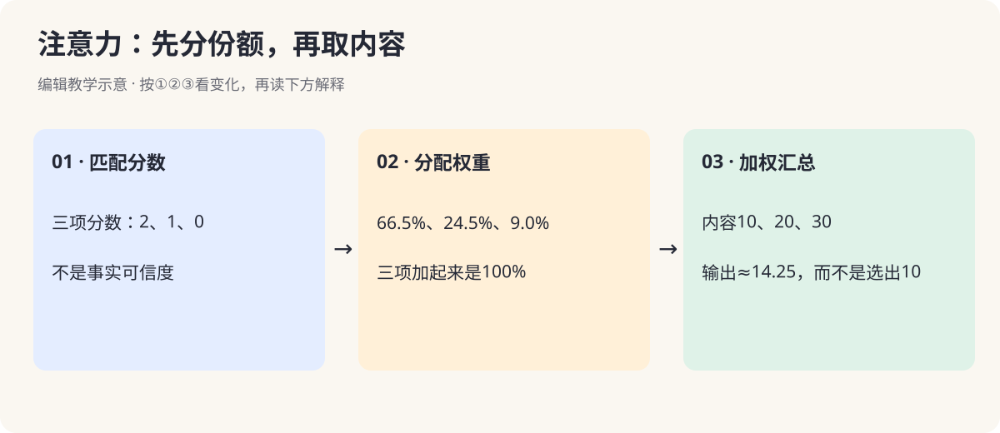
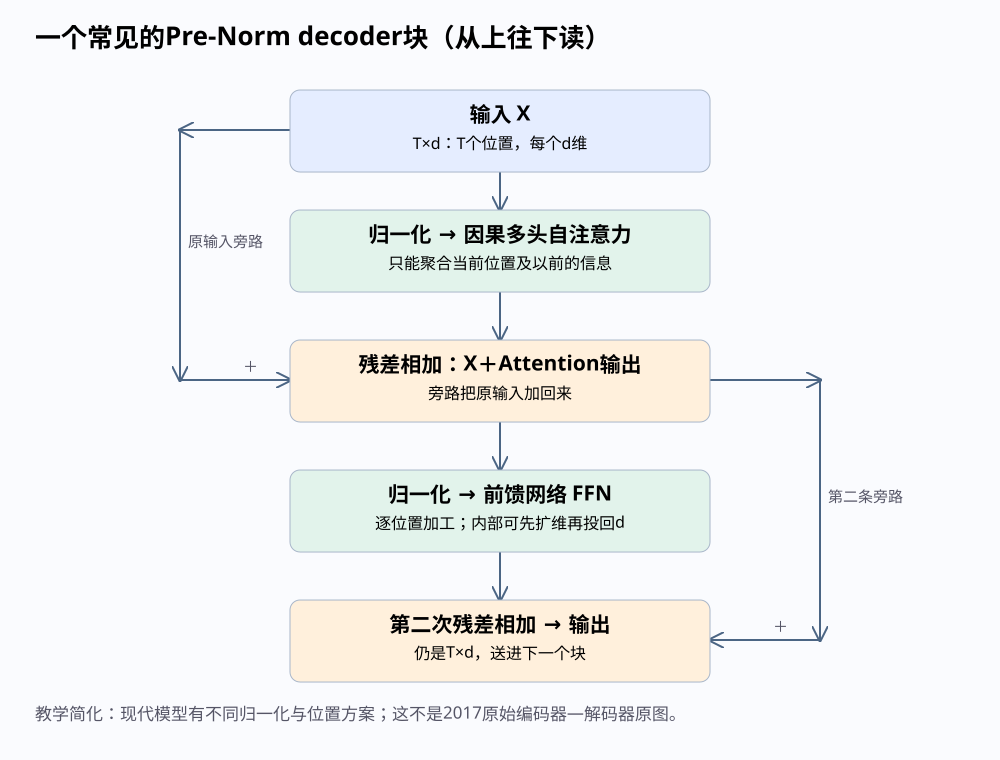
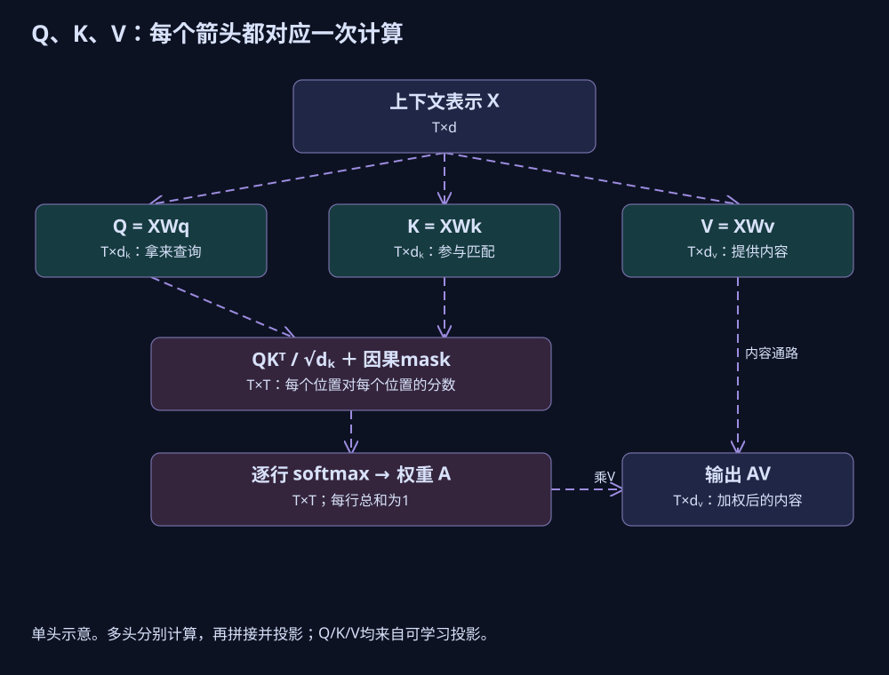

第6章 · 注意力与Transformer
本章开篇生活情境与衔接为编辑教学改写，借鉴原视频从经历引出概念的讲解方法，不是作者原话；原视频线索与论文见下方对应段落。
先看一件具体的事
一句晚回复，为什么盖过了所有其他线索？

注意力：先分份额，再取内容 · 点击可放大先看这个场景
你把一段聊天来回看了很多遍。对方今天回复晚了，句尾少了一个表情。昨天还主动问你的事，此刻却好像没那么重要了。你正在问的那个问题——“他是不是不在意了”——让某些细节突然变得特别显眼。
问题出在哪里
这很适合作为理解注意力的入口，但先别把两者画等号。模型处理一句话时，也需要决定：为了表示当前位置，前面的哪些信息更值得拿过来？同一段上下文，当前要处理的词不同，值得聚合的内容就可以不同。
模型怎样处理
把Query想成这次要找的线索，把Key想成每条信息拿来参与匹配的特征，把Value想成匹配之后真正取走的内容。
Query和每个Key比较，得到一排分数；分数经过缩放、softmax变成权重；再按权重把Value加起来。注意，拿来比较的“标签”和最后汇总的“内容”，不是同一个角色。
再看一个变化
例如三条信息的分数是2、1、0，softmax后大约分到66.5%、24.5%、9.0%。第一条不会把另外两条物理删除，只是在这次聚合里占更大份额。如果不允许看第三条，比如它属于尚未生成的未来，就先用mask把它排除，再重新分配前两条的权重。
放回完整流程
多个注意力头像是在不同的可学习投影下分别找关系；接着还有前馈网络、残差、归一化与位置机制，让信息一层层加工。Transformer是这些部件组成的结构，注意力只是其中关键的一环。下面会把它们放回生成下一token的路径里，避免只背一个QKV公式。
回到开头
回到聊天记录，最显眼的细节不一定最可靠；在模型里，注意力权重大也不等于事实为真。一条线索能参与拼出连贯的解释，却不能凭“讲得通”证明事情确实如此。这是阅读这个比喻时值得留下的一点，而不是用Attention直接解释所有幻觉或人的感情。
这一章怎么读先带着上面的问题往下看。每个概念先用白话接上情境，再给计算；遇到公式可以先看旁边的例子。动手实验和答案直接展开，论文留在相应概念后，想追根究底时再点开。
先动手试一试 → 6.1 带着问题进入模型
Embedding把每个token变成向量，Attention让它结合允许看到的上下文；Transformer继续加工这些表示，最后才得到下一token的分数。
先沿箭头看懂：多头注意力怎样合起来
 各头并行计算，不是头1算完才轮到头2；也不能预先指定每头必然理解哪种含义。
各头并行计算，不是头1算完才轮到头2；也不能预先指定每头必然理解哪种含义。6.2 Attention：按当前查询汇总上下文
把“哪一句值得看”和“从那一句拿走什么”分成两个问题，Q、K、V就不会只剩三个字母。下面先算匹配，再算份额，最后汇总内容，每一步都能对上一个不同的角色。
注意力让每个位置基于query与key的匹配，对value加权汇总，从而形成上下文表示。
把刚才的直觉一步步算出来
先只看一个query：它和每个key做点积，得到匹配分数；除以√dₖ调节尺度，再对允许看到的位置做softmax归一化；最后用这些权重加权求和value。每一步处理不同对象：分数、概率权重和信息内容不能混为一谈。
取缩放后的分数[2,1,0]，softmax约[0.665,0.245,0.090]。若value是[10,20,30]，输出约14.25。最高权重只代表在当前计算中较大，并不构成事实可信度或因果重要性的证明。
因果mask在归一化前把未来位置排除。多头注意力用不同参数投影做多组聚合，并再组合结果。Transformer还需要前馈层、残差、归一化和位置信息，不能把整套结构缩成“注意力等于智能”。
换你试一次：先猜，再算
对分数[2,1,0]屏蔽最后一项后，权重和输出变成什么？
参考答案与计算结果
前两项softmax约[0.731,0.269]，第三项为0；对应value[10,20,30]时输出12.689。
这个类比帮到哪里，停在哪里
注意力权重不是事实可信度，也不是人类心理注意力。页面摘要将注意力与幻觉直接联系，因果表述过强；幻觉不能由一个模块单独解释。
关联视频 · 已取得完整音轨并完成本机自动转写；本节综合转写与页面摘要改写，术语和个别片段尚未逐秒校对。本条自动转写含重复/低质量片段，不据此复述缺失句子。
6.3 补齐 Transformer
现在把注意力放回整台机器。它负责让位置之间交换信息，但还要有位置机制区分顺序、前馈网络加工表示、残差等结构帮助信息和梯度流动。沿着一枚token走一圈，比背部件清单更容易理解。
把因果注意力、位置编码、残差连接、归一化和前馈网络串起来。残差是x+F(x)，有助于训练深层网络，不是永远不会梯度消失的保证。原始Transformer是编码器—解码器，现代生成式LLM常用decoder-only变体。
把刚才的直觉一步步算出来
把一次生成拆成六步：文本分词得到ID；查表形成token向量；引入位置信息；经过重复的Transformer块；投影到词表得到logits；按解码规则选出下一个token。新token接回上下文后继续这个过程，直到停止条件。
一个常见decoder-only块包含归一化、带因果mask的自注意力、残差相加、前馈网络，再加一次残差；不同架构的归一化位置、激活函数和位置机制不同。残差x+F(x)给变换保留直接路径，不能保证任何网络都不会梯度消失。
因果mask使第t个位置只使用允许的前缀。训练时可以对许多位置并行计算损失，因为目标文本已知且mask防止偷看；自回归生成时下一个token还没确定，必须按序生成。并行训练不意味着无mask，也不意味着整句一次生成。
位置机制用于让表示区分顺序，原论文展示正余弦编码，现代模型还使用其他方案。不要从Attention公式本身误以为位置已经自动包含。原始2017年模型是encoder-decoder，不能把其图1每一块原样套到所有现代LLM。
推理时KV Cache保存先前token的Key和Value，减少重复计算；它通常不是训练新权重，也不是无限长期记忆。缓存占用随上下文长度、层数、KV头数、维度和数值精度增长，具体优化需看模型实现。
换你试一次：先猜，再算
一段上下文有3个token。预测第2个位置的下一个token时，因果注意力允许看哪些位置？为什么训练可以并行算3个位置，生成却仍需要顺序？
参考答案与计算结果
位置2允许使用1和2，不能偷看3。训练有完整目标并用mask限制信息流；生成时后一个位置的真实输入尚未产生。
这个类比帮到哪里，停在哪里
不是对作者视频正文的归纳，也不表示作者从未讲过该内容。
先认路：完整模型、一个块、一次注意力
三张图按“整台机器→一个重复模块→模块中的一次计算”放大。先不背公式，沿箭头回答：输入是什么，输出是什么，哪条线只是绕过去相加？
 ① 整体：输入文字怎样变成下一个token · 点击打开大图
① 整体：输入文字怎样变成下一个token · 点击打开大图
② 放大一个Transformer块：两条残差旁路 · 点击打开大图
③ 再放大注意力：匹配走Q/K，内容走V · 点击打开大图图中的T、d、V：T是当前输入位置数；d是每个位置向量的长度；V是词表候选数量。它们是形状，不是三个要背诵的算法。注意力里的Value也常写V，语境不同，别与词表大小混淆。
Softmax到底做了什么？一行一行算
先用一个问题：当前词要从三条信息里取内容，匹配分数是2、1、0。分数有大小，却还不是份额；直接除以总和也不适合任意含负数的分数。
| 步骤 | 信息A | 信息B | 信息C |
|---|
| ① 缩放后的匹配分数 | 2 | 1 | 0 |
| ② 取指数 exp(分数) | 7.389 | 2.718 | 1.000 |
| ③ 除以总和11.107 | 0.665 | 0.245 | 0.090 |
| ④ 对应Value内容 | 10 | 20 | 30 |
输出≈0.665×10＋0.245×20＋0.090×30＝14.25。它把三份内容混合起来，并没有抽签选出一份。上面用标量方便看清，真实Attention的Value通常是向量，每个维度按相同权重加权。
为什么这样变换？指数把任意实数变成正数，除以总和让三项加起来等于1；指数还会放大分数差距。三项若同为0，份额就是各1/3；把三项一起加100，份额不变，因为公共因子会约掉。实际实现常减去最大分数，避免指数数值过大。
把softmax接回Q、K、V
当前表示 → Q（这次拿来查询的向量）
其他位置 → K（参与匹配）与V（提供内容）
Q和每个K做点积 → 除以√dₖ → 排除不允许看的位置
→ softmax：变成总和为1的权重 → 对V加权求和
缩放在softmax之前：维度增大可能让点积幅度增大，导致softmax过于尖锐、梯度变小，所以原论文使用√dₖ缩放。因果mask同样在softmax之前：不允许看的位置用负无穷分数表示，取指数后权重就是0。匹配权重表达这次如何聚合信息，不是事实可信度。
现在调滑块：只抬高A的分数，看B、C为什么一起失去份额 →
Multi-Head Attention：多个头究竟多在哪里？
先看一个词在句子里可能需要几种关系：它指的是谁？它和哪个动作有关？单次加权汇总只有一组匹配方式。多头注意力让同一组输入经不同的可学习投影，形成多组Q、K、V，各自计算一次注意力，再组合结果。真实模型的某个头不保证恰好对应某种人能命名的关系。
- 同一输入X，分成h条并行路线。第i头使用自己的Wqᵢ、Wkᵢ、Wvᵢ；不是把句子切成h段。
- 每个头独立匹配并聚合。headᵢ=softmax(QᵢKᵢᵀ/√dₖ＋mask)Vᵢ。每个头都有自己的权重矩阵。
- 拼接各头输出。Concat把向量接长，保留各头结果，不是在这里取平均，也不是再做一次softmax。
- 输出投影Wₒ。把拼接后的信息重新混合，并映射回模型维度，才能接后面的残差等结构。
看形状就不容易迷路例如T=3、模型维度d=8、h=2，每头Value维度4：每头输出3×4 → 拼接3×8 → 乘8×8的Wₒ → 输出仍是3×8。这是常见配维示意，不是所有架构的唯一尺寸。
原论文§3.2.2及图2：左边是单次缩放点积，右边是并行多头、拼接与输出投影。
从一个注意力头，到涌现能力，中间隔了什么？
刚才那一步只完成了信息汇总。它没有独自完成理解、推理或代码生成。先把层次分开看：
| 层次 | 具体发生什么 | 不能直接推出什么 |
|---|
| 单头注意力 | 用一组Q/K/V投影聚合上下文 | 不能据此说它已会推理 |
| 多头注意力 | 不同投影并行聚合，再组合结果 | 不能规定某头必然负责某种语义 |
| 多层Transformer | 注意力、前馈、残差等反复加工表示 | 增加层数不保证所有能力提高 |
| 更大规模的训练 | 模型、数据、计算与训练方式共同变化 | 能力变化不是Attention单一模块的证明 |
Emergent abilities：为什么有时看起来突然会了？
“涌现能力”在相关研究中的一种用法是：小规模模型表现不出某项能力，而更大规模模型在某个评测上开始表现出来，且这种变化不容易从小模型的曲线直接外推。它描述观察到的能力与规模关系，不是另一个网络部件。
举一个编辑构造的评分示意：一道题要连续答对10个位置才算整题正确。假设每个位置独立，单位置正确率从50%升到70%、再到90%，整题全对率分别是0.5¹⁰≈0.10%、0.7¹⁰≈2.82%、0.9¹⁰≈34.87%。底层改善可以是连续的，严格的整题评分却会显得像突然跃升。这不是实际LLM实验，也不表示所有涌现都由这种机制解释。
读到“涌现”，先问三个问题什么任务？采用什么指标？随着规模变化的原始成绩是什么？有研究报告新能力，也有研究指出某些突变受指标选择影响。两种讨论都需要看实验，不能只用“量变产生质变”带过。
动手看看：只改一个条件，会发生什么？
先猜：把某一个分数抬高，另外两条信息的份额会怎样？拖动滑块，看权重重新分配。再看下面屏蔽第三项的算例：mask改变的是能不能参加，分数改变的是参加后占多少。
想亲手复现，就运行这段小实验
本例是编辑编写的教学计算，不是作者实验的代码复刻。先把 common.py 与本章脚本下载到同一个目录，再执行 python3 06_attention.py。只使用Python标准库。
from common import E, attention, weather_hidden
scores, weights, out=attention(E[1],E[:2],E[:2])
print('query:', E[1])
print('scores:',[round(x,6) for x in scores])
print('weights:',[round(x,6) for x in weights])
print('weighted value:',[round(x,6) for x in out])
print('after residual:',[round(x,6) for x in weather_hidden()])
# First position cannot attend to future “天气”.
_, first_weights, first_out=attention(E[0],E[:1],E[:1])
print('first position causal weights:',first_weights,'output:',first_out)
assert first_weights==[1.]
实际运行输出
query: [0.0, 1.0]
scores: [0.0, 0.707107]
weights: [0.330238, 0.669762]
weighted value: [0.330238, 0.669762]
after residual: [0.330238, 1.669762]
first position causal weights: [1.0] output: [1.0, 0.0]
先不急着读完每一行代码。找到输入、这次改变的量和最后输出，按上面的例子预测一次，再运行核对。若结果和直觉不同，打印中间值，看看差异从哪一步开始。
回到开头，你能解释了吗？
Key负责参与匹配，Value负责提供内容；为什么要把这两个角色分开？
某个词的注意力权重最高，能不能据此认定它表达的事情最真实？
用自己的话讲给一个没读过这一章的人听。能把问题、过程和结果接起来，再看公式就会容易一些。